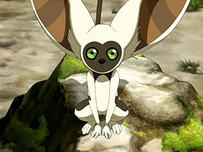

Learn about Team Avatar!
Avatar Aang
Aang was a male Air Nomad born in 12 BG and the Avatar during the Hundred Year War, succeeding Avatar Roku and preceding Avatar Korra. As the Avatar of his time, he was the only person capable of using all four bending arts: airbending, waterbending, earthbending, and firebending. He was also one of a select few Avatars and one of the first in many cycles to learn the ancient art of energybending and the first Avatar known to have actively used the technique.
More About Avatar Aang!
Toph Beifong

Toph Beifong is an earthbending master, one of the most powerful of her time, and the discoverer of metalbending. Blind since birth, Toph was constantly treated condescendingly because of her visual impairment, particularly by her overprotective parents, Lao and Poppy Beifong. Upon discovering badgermoles, earthbending animals who are also blind, she learned how to use earthbending as an extension of her senses. This gave her the ability to "see" every vibration that passes through the ground.
More About Toph Beifong!
Katara
Katara is a waterbending master, born in the Southern Water Tribe to Chief Hakoda and his wife Kya. During her childhood, she was the only waterbender living in the Southern Water Tribe. After losing her mother in a Fire Nation raid and her father left to battle against the Fire Nation in the Hundred Year War, she was raised by her paternal grandmother Kanna alongside her older brother Sokka. As a teenager, Katara and her brother discovered the young Air Nomad Avatar, Aang, who had been frozen in an iceberg with his bison, Appa, for a century. In need of a waterbending master, the siblings and Aang left the South Pole on a journey toward the Northern Water Tribe.
More About Katara!
Appa
Appa was Avatar Aang's loyal sky bison, who shared a strong bond with him and Momo as they were all some of the few remaining traces of the Air Nomad civilization. Appa was most noted for his ability to fly in spite of his heavy weight, a feat achieved through airbending, which made him the primary means of transportation utilized by Team Avatar.
More About Appa!
Momo
Momo was a winged lemur and a loyal companion of Avatar Aang and his friends. By late 99 AG, he lived at the Southern Air Temple and was the only known specimen of the winged lemur species to still be alive after the Air Nomad Genocide.
More About Momo!
Click here to check out the table of everyones Ages!
Go back to home